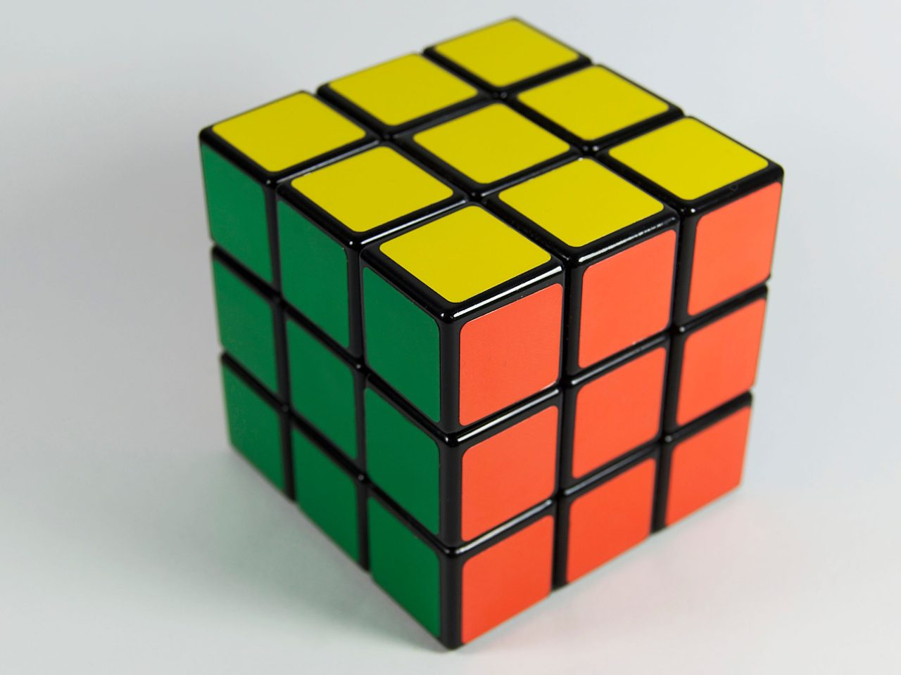

8个
角块
分布在三阶魔方的角上，每块有 3 个颜色，一共有 8 个角块。
01序章 · About
三阶魔方最普通，但内涵最丰富。且有多种玩法。例如：速拧、盲拧、最少步、脚拧等。
刚开始学习魔方，请不要害怕，魔方并没有那么难。它并不是需要记住三阶魔方所有变化——
实际上，三阶魔方有 43,252,003,274,489,856,000 个可还原的状态。若考虑中心块朝向，则总共有 88,580,102,706,155,225,088,000 个可还原的状态。所以，要想记住它所有变化是不可能的。
它需要的是一步一步来，就像盖房子一样，先处理地基，再把整体结构修出来，最后再装修。
初级公式只有十几个公式，通过在魔方复原格的学习，相信你很快就能学会三阶魔方了。
魔方并没有那么难，
魔方复原格 · 写给第一次接触魔方的你
你需要的只是一步一步来。
02认识结构 · Anatomy
三阶魔方有六个面，颜色分为：黄、蓝、红、绿、橙、白。有些魔方也会将橙替换成紫，或将白替换成黑，其余都是不正规的，无法参加正规比赛。
六面颜色一一对应，记住“白底黄顶、蓝前绿后、橙左红右”，后面的公式会轻松很多。

8个
分布在三阶魔方的角上，每块有 3 个颜色，一共有 8 个角块。
6个
分布在每一面的中心，每块有 1 个颜色，一共有 6 个中心块。中心块可以确定此面复原后的颜色。
12块
分布在三阶魔方的边上，每块有 2 个颜色，一共有 12 块。
03公式语言 · Notation
三阶魔方的每一个公式都是由字母组成的，每一个字母都代表一次旋转魔方的方式。先选一个面，再选旋转方向，看看它是怎么转的。
例如：R 指的是右面的一层顺时针旋转 90°；如果是 R′，则指的是右面的一层逆时针旋转 90°。如果出现 R2 或 R′2，则分别指右面的一层顺时针旋转 180° 和逆时针旋转 180°。
这里要注意，无论是顺时针旋转还是逆时针旋转，都是以字母所指那一面的中心为旋转点进行旋转，初学者在这一块有些难理解。
公式的层级
三阶魔方有多种公式，例如：初级公式、中级公式、cfop 高级公式，再往后还有 coll 公式，甚至有盲拧专属的盲拧公式等。本网页主要介绍三阶魔方初级公式，适合魔方初学者，熟练掌握初级公式后，方可学习其他公式和魔方。
04三层结构 · Layers
三阶魔方一共有三层，我们以白色中心块为中心的一层为底层，以黄色中心块为中心的一层为顶层。
以黄色中心块为中心的一层
夹在顶层与底层之间的一层
以白色中心块为中心的一层
这里要提一下，三阶魔方初级公式是一层一层拼的，而不是一面一面拼的。
只是颜色相同，四周的颜色并不一定对得上。
侧面颜色也与相邻面对齐，是真正“拼好”的一层。
05学习路线 · Roadmap
四步走完一个完整的学习闭环：先看清结构，再读懂语言，然后理解逻辑，最后动手复原。
看懂六面配色，分清角块、中心块与棱块。
02 已上线掌握 F、U、R、L、D、B 与 ′、2 的含义。
03 已上线记住一层一层拼的复原逻辑，而不是一面一面拼。
跟着初级公式完成第一次完整复原，逐层拆解演示正在制作。